R(ead)(B)abbling
Project wasn't built in a day, so does our vocabulary. In fact, for example, we learned nouns differently from verbs, and this starts from our infancy.
"R", for "read"; "abbling", for "babbling". We coined "rabbling" for our title to deconstruct the way babies learn language. Here we will show you when and how a baby learn to "rabble" a story that "flies" on the right.
17 Months
After immersing in human language for several months, most babies have passed the stage where they are only able to use one or more words/fragments with meaning. They have vocabulary of approximately 5-20 words that are made up chiefly of nouns. They might repeat a word or phrase over and over.
18 Months
They might repeat a word or phrase over and over. At this age, they produce much jargon with emotional content and are able to follow simple commands (really simple).
20 Months
After months of training, babies can now name a number of objects common to his surroundings and are able to use at least two prepositions, usually chosen from the following: "in", "on", "under".
21 Months
They can combine words into a short sentence with an average length of 1.2 words. Approximately 60% of what most babies say should be intelligible although their rhythm and fluency are often poor.
23 Months
Approaching two years old, babies' vocabulary grow to approximately 150 - 300 words, yet their volume and pitch of voice are not yet well-controlled.
24 Months
They can now use pronouns like "I", "me" and "you", although me and I are often confused. "My" and "mine" begin to emerge, and babies can responds to such commands as “show me your eyes (nose, mouth, hair)”.
26 Months
At this age, they start to use some past tenses and plurals, and know at least three prepositions, usually "in", "on", "under". They can now differentiate "I" and "me"!
27 Months
As building their vocabulary, they can handle three-word sentence easily. Body become familiar to them as they know chief parts of body and can indicate these if not name them.
29 Months
Now babies grow their vocabulary to 900 to 1000. About 90% of what child says should be intelligible. Verbs and predicates begin to predominate their language.
30 Months
They now understand most simple questions dealing with their environment and activities. They are able to relate their experiences so that reasoning can be followed. Of course, most of them now can read the story on the right.
Regression
As stated and shown, we learn words in different manners. On the right are four cubic polinomial regression lines that show the learning rates of nouns, functon words, predicates and others.
We can see that nouns are acquired quicker than others since we get to know concrete objects earlier than others; Then come types such as prepositions; Function words (eg. pronouns) follow since we start to make sense of relationships of objects; Finally we learned predicates and verbs because actions become much more available and interesting to us than before.